TRACON ATC
Air traffic control for your local AI coding agents.
main @ 75391f0 · screenshots of the real Flight Deck reading this Mac's sessions, 16 Oct 2026 · ← → or Space to move
The problem
Many agents, many accounts, and no radar
A working day now means several Claude Code profiles on different plans, Antigravity sessions with their own subagents, and a terminal tab for each. Nothing shows them all in one place.
Silent waits
An agent stops on a question or a permission prompt and sits there for an hour because its tab is hidden.
Invisible burn
Tokens burn across five accounts at once, and the first sign of trouble is a rate limit.
Lost structure
A long session with subagents is a wall of transcript; what ran when, and how long it took, is hard to see.
How it works
The Avalokita engine: a read-only observer
| 1 · Watch | Tails every Claude Code profile's transcripts (~/.claude*/projects/**/*.jsonl), live-session pid files and Antigravity brain transcripts, through FSEvents plus a 2-second poll |
| 2 · Normalize | Turns Claude Code and Antigravity events into one FlightPacket per session: state, tool in flight, subagents, tokens, burn rate |
| 3 · Broadcast | Pushes the whole airspace over ws://127.0.0.1:4040/ws on every change; the same snapshot at GET /api/flights |
| 4 · Trace | Keeps a bounded execution DAG per flight (last 40 turns, up to 100 tool calls each) at GET /api/trace?flight=<callsign> |
| Read-only | Never writes to ~/.claude* or ~/.gemini; scripts/check.sh fails the build if the engine source gains a write call |
The metaphor
Sessions are flights, you are the controller
| Flight · callsign | One agent session. CL-BIZ-37AA = Claude Code, profile ~/.claude-biz, session id; AGY-37AC = Antigravity |
| Squawk | The plan behind the account: SQ-20 Pro, SQ-100 Team or Max, SQ-AGY (set with TRACON_TIERS) |
| State | PREFLIGHT → CRUISING → TOOL (executing) → HOLDING (waiting on you) → LANDED, or ABORTED |
| Escorts | Subagents spawned by a flight, shown as chips on its card and as nodes in its DAG |
| Burn rate | Tokens per minute, averaged over 5 minutes, per flight and for the whole fleet |
Flight Deck · localhost:4040
Every session on one screen
- One card per session active in the window, across all five Claude profiles and Antigravity.
- The fleet bar on top counts flights, airborne and holding, plus the total burn per minute.
- Updates live over the WebSocket; no refresh needed.
Real data: 49 sessions from this Mac in a 2-day window (TRACON_WINDOW_MIN=2880; the default is 30 minutes).
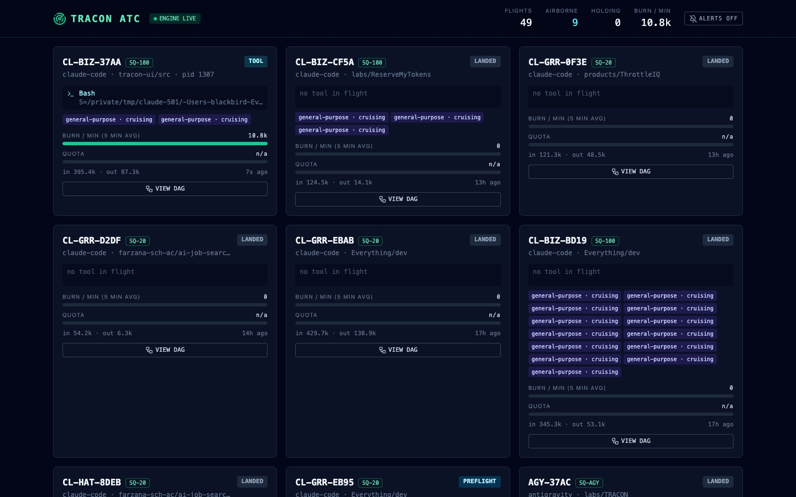
Fleet bar
The whole airspace in four numbers
- FLIGHTS on the radar, how many are AIRBORNE, how many are HOLDING, and the fleet's BURN / MIN.
- ENGINE LIVE shows the WebSocket is connected; it turns to ENGINE OFFLINE if the engine stops.
- The ALERTS switch turns on the holding chime and notifications.
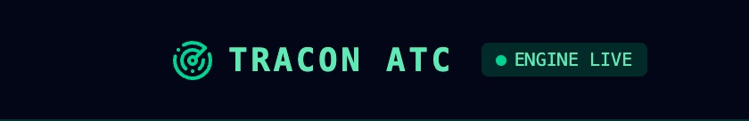
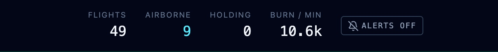
Flight cards
What each agent is doing right now
- Callsign, squawk and state badge; runtime, working folder and pid.
- The tool in flight with its argument (here a Bash command), and a chip per subagent with its own state.
- Burn-rate bar, token totals in and out, and the time since the last event.
The quota gauge shows n/a: no quota data source exists yet.
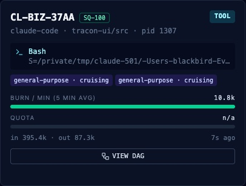
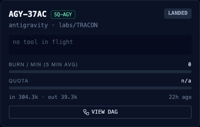
Execution DAG · VIEW DAG
A session's history as a graph
- Each turn is a column, chained left to right; its tool calls hang below in order.
- Agent calls and the subagents they spawned are linked, with tokens per subagent.
- Badges show latency (or running) and tokens per turn. Pan, zoom and the minimap reach older turns.
A real session: 10 turns, 34 nodes, 3 subagents.
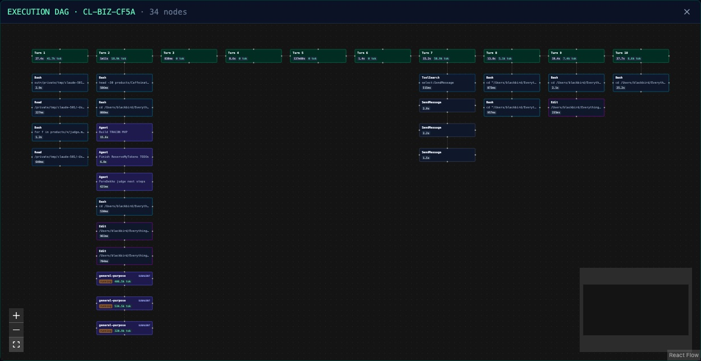
DAG detail
Zoom in on any step
- Hover a node for its full path or command; colour marks the kind of step (turn, read, edit, shell, subagent).
- Long sessions stay readable: the DAG opens zoomed on the six most recent nodes.
- It refreshes whenever the engine sends a new packet for that flight.
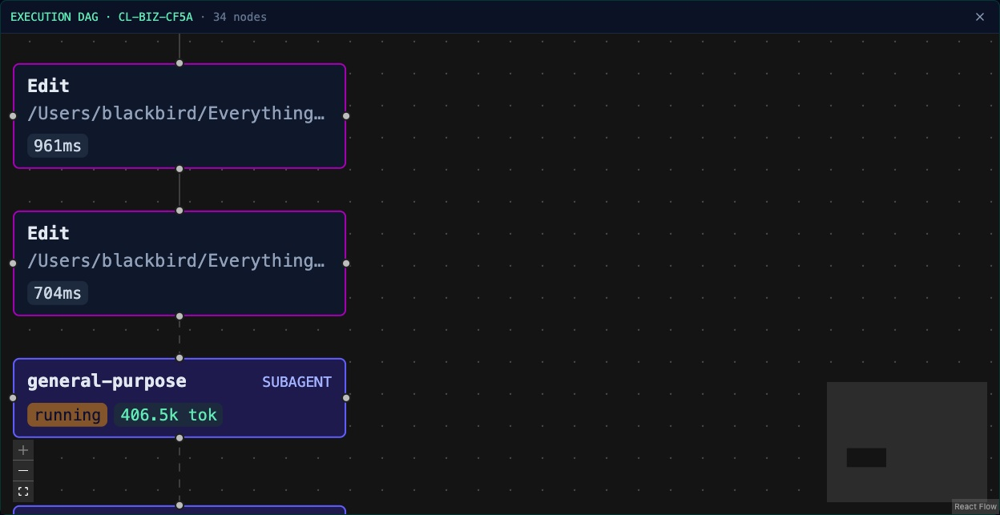
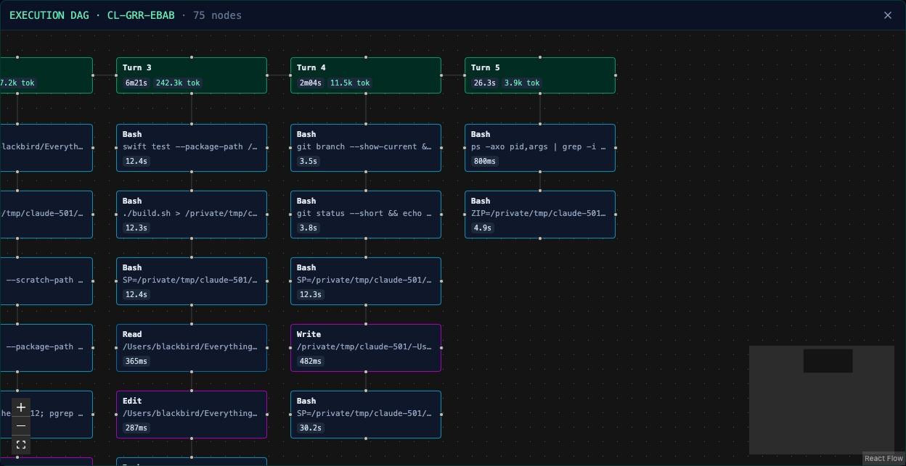
Holding alerts
Know the moment an agent needs you
- A flight waiting on you (a question, a plan approval, or a tool call with no result for 60 s) turns amber and pulses.
- With ALERTS on: a two-tone chime and a system notification, at most once per flight every 2 minutes.
- The tab title shows the count, e.g.
(1) HOLDING · TRACON ATC, even in a background tab.
CL-DEMO-BEEF is a scripted demo session. The notification it fired: "CL-DEMO-BEEF is holding | /work/demo · AskUserQuestion is waiting on you".

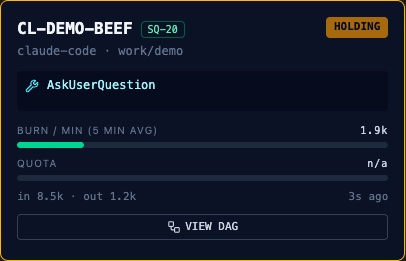
Terminal · tracon status
The same radar without a browser
tracon statusprints one line per flight: squawk, callsign, runtime, state, tool and tokens.- Holding flights are listed at the bottom with their folder.
tracon startruns the engine and opens the Flight Deck;--no-openskips the browser.
Real output from this Mac.

Mobile
Check the fleet from your phone
- The deck collapses to one column; the fleet bar stays on top.
- The DAG works with touch pan and zoom; the minimap hides on small screens.
Captured at 390 × 844. The engine binds to 127.0.0.1, so a phone needs a tunnel or a LAN bind to reach it.
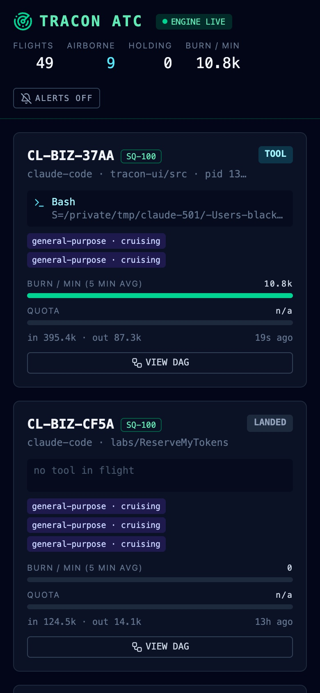
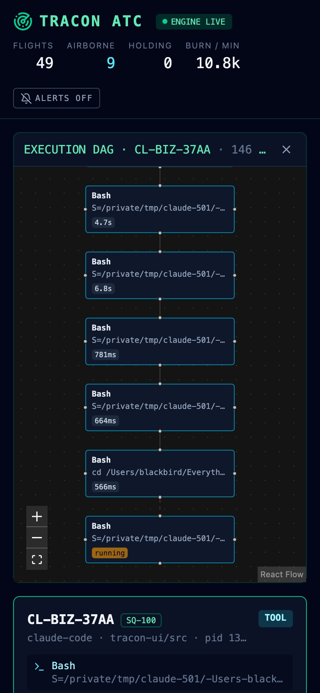
Under the hood
Small, local and tested
| Packages | npm workspaces: avalokita-engine (Node, TypeScript), tracon-ui (React, Vite, Tailwind, React Flow), tracon-cli |
| Runtimes | Claude Code (every ~/.claude* profile and CLAUDE_CONFIG_DIR) and Google Antigravity |
| Settings | TRACON_PORT (4040), TRACON_WINDOW_MIN (30), TRACON_TIERS (plan per profile) |
| Checks | scripts/check.sh: install, two typechecks, stray files, read-only guard, 16 tests, UI build |
| Tested on | One 30-day sweep: 287 flights, 16,248 DAG nodes, no broken edges; 377 of 379 subagents matched to the call that spawned them |
What's next
Built so far, and the roadmap
| Done | Phase 1 (engine, scanners, WebSocket server) and Phase 2 (Flight Deck, execution DAG, holding alerts) |
| Phase 3 | Ops Lounge: a PixiJS pixel-art radar room, characters animated by the tool they run, subagents orbiting their parent |
| Phase 4 | TCAS: warn when two agents edit the same file; rate-limit forecasts per plan |
| Known limits | Holding is a guess for long tool calls; alerts need the tab open; quota shows n/a; DAG keeps the last 40 turns; subagents match to their spawning call by time |
TRACON ATC
See every agent. Hear the one that needs you.
npm install · npm start · open localhost:4040